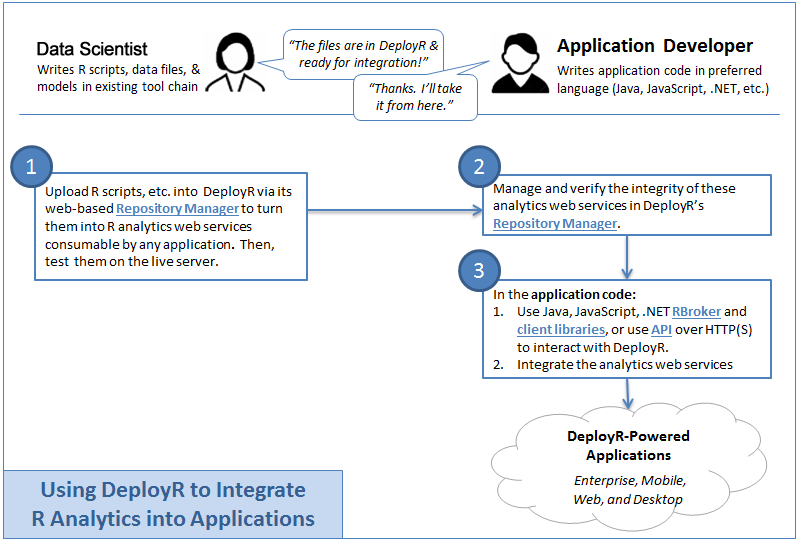
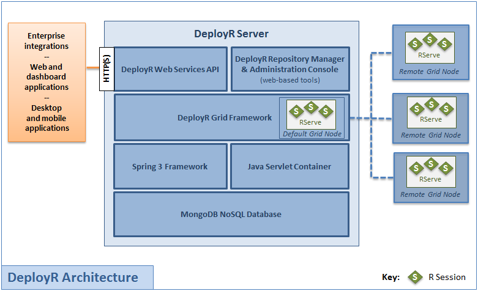

DeployR
R Analytics Integration

♥ The DeployR Team @ github
https://github.com/deployr
Complexity
- Proliferation of complex middle-ware tools
- Complex UI/UX
- Many devices: Desktop. Laptop. Netbook. Tablet. Phone. TV. Appliances. Wearables.
- Silos of expertise and knowledge
Agnostic Information Flow
We want
- Flexible analytics integration into anything
- Easy deployment of your analytics
- We can not be opinionated!
DeployR - Simple APIs for integration
- Turns R scripts into secure analytics web services
- Easy for application developers to collaborate with data scientists to integrate R analytics w/o knowledge of R
- Not opinionated in how you develop or consume the R analytics
Basic Workflow

Roles & Responsibilities

R Scripts == R Scripts
- Local R Script is the same as the deployed R Script in DeployR
- Makes for R code portability, testability, and reusability
- Productive workflow
- True separation of concerns
- Separate from the presentation layer
- Separate from the application domain layer
- Your analytics are just your analytics layer
- DeployR is not opinionated so do what makes sense
Architecture

Architecture
- DeployR is a standalone server product
- Behaves like an on-demand R analytics engine
- Supports a scalable grid framework for your R sessions
< Examples />
The End
find us on Github
https://github.com/deployr